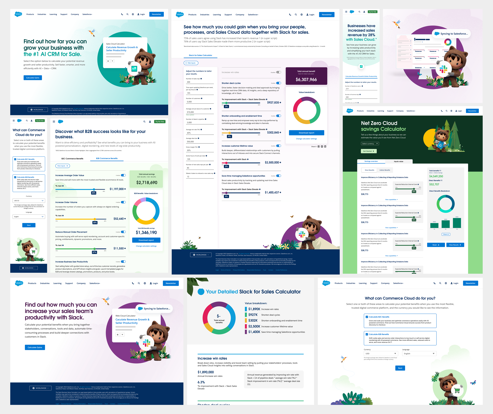
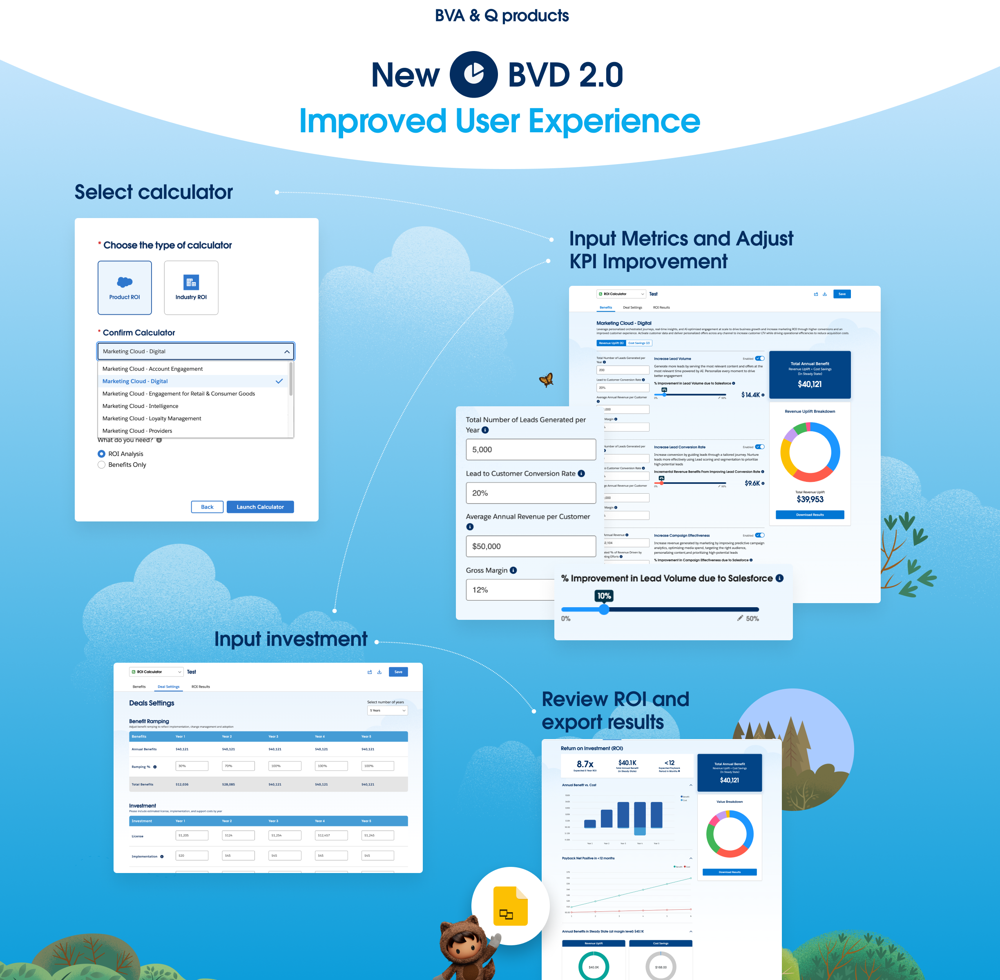
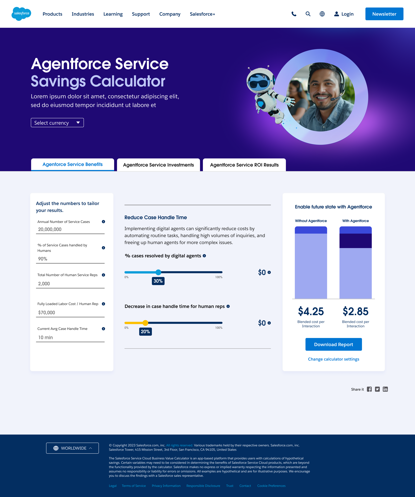
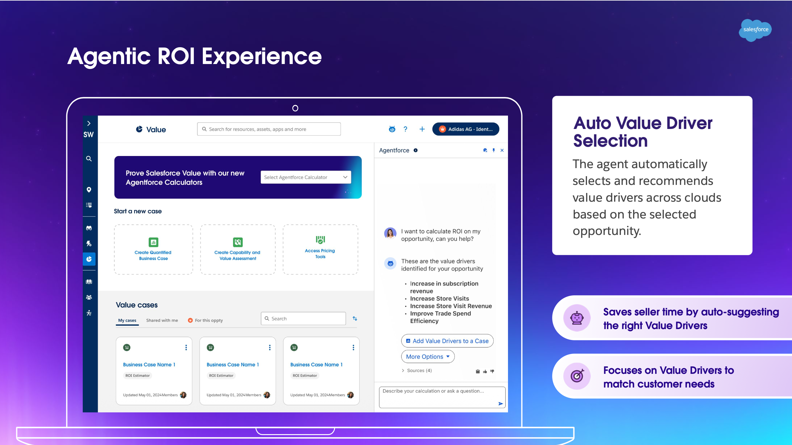

The ROI CalculatorEl ROI Calculator
Every business deal requires a number the client can trust. I designed a tool that allows this data to be calculated in real time. Now, the Account executives don't need to perform manual calculations and then send them to the client; instead, during the meeting itself, they can use this tool to calculate, together with their client, the return on investment they would achieve by working with Salesforce. It all started with single calculators for each product, but it became so successful that every team wanted their own, so I had to develop a multi-cloud platform to support all the teams across different Salesforce products; now it's the most used product in Solutions Workspace platform. Toda negociación comercial necesita una cifra en la que el cliente pueda confiar. Diseñé una herramienta que permite calcular ese dato en tiempo real. Ahora los Account Executives no tienen que hacer cálculos manuales y enviarlos después al cliente: durante la propia reunión pueden calcular, junto a él, el retorno de la inversión que obtendría trabajando con Salesforce. Todo empezó con calculadoras independientes para cada producto, pero tuvo tanto éxito que cada equipo quería la suya, así que desarrollé una plataforma multicloud capaz de dar soporte a todos los equipos y productos de Salesforce. Hoy es el producto más usado de la plataforma Solutions Workspace.
My roleMi rol
Product designer leadLead de product design
UsersUsuarios
AEs · AMER, EMEA, ROWAEs · AMER, EMEA, ROW
StatusEstado
Shipped & iteratingEn producción, iterando
Timeline
2022 – 2026

ContextContexto
Why do manual calculations cost you time and accuracy?¿Por qué los cálculos manuales te cuestan tiempo y precisión?
6,630
Value cases generatedValue cases generados
$87M
In closed deals the work contributed toEn operaciones cerradas a las que contribuyó el trabajo
4,000+
People using the Agentforce assistant across three regionsPersonas usando el asistente Agentforce en tres regiones
5+ → 1
Separate calculators replaced by one multicloud platformCalculadoras separadas sustituidas por una plataforma multicloud
The project's journeyEl recorrido del proyecto
One calculator, then many, then one platformUna calculadora, después muchas, después una plataforma
The success of this tool has allowed it to continue developing over the years. It all started with Service Cloud Calculator, but it soon became clear that a multi-cloud calculator was worthwhile. I designed every stage of this tool and have evolved alongside it.El éxito de esta herramienta le ha permitido seguir evolucionando año tras año. Todo empezó con la calculadora de Service Cloud, pero pronto quedó claro que merecía la pena una calculadora multicloud. He diseñado cada etapa de esta herramienta y he evolucionado con ella.
01
A calculator per Salesforce productUna calculadora por producto de Salesforce
I led this project from scratch. The key UX problem was to organise dense data onto a single screen so AEs could seamlessly input data and see instant output. Creating an effortless user experience was essential to building client confidence. One of the big challenges of this project was managing tight deadlines alongside Salesforce's high-stakes sales teams while working closer to engineering to translate business requirements into an easy technical build. A responsive tool to be used on the device that best suits the seller.Lideré este proyecto desde cero. El principal problema de UX era organizar datos muy densos en una sola pantalla para que los AEs pudieran introducir la información y ver el resultado al instante. Conseguir una experiencia fluida era esencial para generar confianza en el cliente. Uno de los grandes retos fue gestionar plazos muy ajustados junto a equipos de ventas con mucho en juego, trabajando muy cerca de los desarroladores para traducir los requisitos de negocio en una construcción técnica sencilla. Una herramienta responsive para usarse en el dispositivo que mejor le convenga al vendedor.

02
The multicloud platformLa plataforma multicloud
Following that success, I designed a single tool that would support everyone equally, eliminating the queue instead of managing it. The challenge was even greater: it wasn't just about calculating the ROI of a single product, but about enabling those offering multiple products to perform the calculations simultaneously, in the same document, and exporting a comprehensive report with all the information together. This solution not only became a universal tool but also saved thousands of Account Executives across different industries, countries, and product lines countless hours of work and frustration.Tras ese éxito diseñé una única herramienta que diera soporte a todos por igual, eliminando la cola en lugar de gestionarla. El reto era aún mayor: no se trataba solo de calcular el ROI de un producto, sino de permitir que quienes ofrecen varios productos hicieran los cálculos a la vez, en el mismo documento, y exportaran un informe completo con toda la información junta. Esta solución no solo se convirtió en una herramienta universal, sino que ahorró a miles de Account Executives de distintas industrias, países y líneas de producto incontables horas de trabajo y frustración.

03
Agentforce inside the calculatorAgentforce dentro de la calculadora
Recently I have designed the Agentforce Service Savings Calculator which was highly acclaimed within the company. At Salesforce, Agentforce marked a turning point, and of course, this tool had to be updated and follow the same direction the company was taking. It has already been used by more than 4,000 users across AMER, EMEA and ROW. Recientemente he diseñado la Agentforce Service Savings Calculator, que ha tenido una acogida excelente dentro de la compañía. En Salesforce, Agentforce marcó un punto de inflexión y, por supuesto, esta herramienta tenía que actualizarse y seguir la misma dirección que la compañía. Ya la han usado más de 4.000 personas en AMER, EMEA y ROW.

04
The Value AgentEl Value Agent
I’m leading the transition of our traditional ROI calculator into an agent-centric platform, 'the Value Agent.' The new workflow automates business case creation so salespeople provide the opportunity context, and the agent instantly builds tailored value models with minimal setup. By integrating AI directly into an established, high-traffic tool, we are capitalising on existing momentum to accelerate user adoption.Estoy liderando la transición de nuestra calculadora de ROI tradicional hacia una plataforma centrada en agentes: el Value Agent. El nuevo flujo automatiza la creación del business case, de modo que el vendedor aporta el contexto de la oportunidad y el agente construye al instante modelos de valor a medida con una configuración mínima. Al integrar la IA directamente en una herramienta ya establecida y de mucho uso, aprovechamos la inercia existente para acelerar la adopción.

THE VALUE AGENT FUNCTIONALITYFUNCIONALIDAD DEL VALUE AGENT
What the agent does inside the value case.Lo que hace el agente dentro del value case.
Auto value driver selectionSelección automática de value drivers
Selects and recommends value drivers across clouds based on the selected opportunity.Selecciona y recomienda value drivers de varios clouds según la oportunidad seleccionada.
Smart input extractionExtracción inteligente de inputs
Populates the calculator's value drivers using benchmark numbers and metadata from similar opportunities.Rellena los value drivers de la calculadora con benchmarks y metadatos de oportunidades similares.
Improvement forecastingPrevisión de mejora
Recommends a percentage improvement from the customer's current state, similar opportunities and industry benchmarks.Recomienda un porcentaje de mejora a partir del estado actual del cliente, oportunidades similares y benchmarks de industria.
Input optimisationOptimización de inputs
Within a full value case, recommends updates to the inputs already entered.Dentro de un value case completo, recomienda actualizaciones de los inputs ya introducidos.
Executive talk trackTalk track ejecutivo
Prepares a talk track for the AE tailored to the audience, with anticipated questions and guidance on the executive readback.Prepara un talk track para el AE adaptado a la audiencia, con preguntas previstas y guía para el readback ejecutivo.
WireframesWireframes
Structure before surfaceLa estructura antes que la superficie
The workflow was initially addressed with a low-fidelity prototype to meet the diverse needs and agree with the leaders on the exact direction and functionalities the business required. After extensive discussions and finalising the flow, the high-fidelity prototype was designed, following the design system guidelines that my team and I created to align all the tools my team develops to support sales teams.El flujo se abordó primero con un prototipo de baja fidelidad para cubrir necesidades muy diversas y acordar con los responsables la dirección exacta y las funcionalidades que pedía el negocio. Tras muchas conversaciones y una vez cerrado el flujo, se diseñó el prototipo de alta fidelidad siguiendo las guías del design system que mi equipo y yo creamos para alinear todas las herramientas con las que damos soporte a los equipos de ventas.


ApproachEnfoque
How the decisions were madeCómo se tomaron las decisiones
01
Research with the people defending the numberResearch con los sellers que se apoya en el calculator
Interviews and workshops with AEs and SEs, then usability testing on the real flow. Close collaboration with the PO, PM and developers.Entrevistas y worksops con AEs y RVPs, seguidos de pruebas de usabilidad en el flujo real. Colaboración estrecha con el Product Owner y los desarrolladores.
02
Numbers designed to be read aloudCifras diseñadas para leerse en voz alta
With each chart and data point, I asked myself if it was intuitive and easy to understand so that an account executive could use it directly with a finance director without causing confusion.Con cada gráfico y cada dato me preguntaba si era intuitivo y fácil de entender, para que un Account Executive pudiera usarlo directamente con un director financiero sin generar confusión.
03
Scoped to be built, quarter by quarterPlanning para construirse, trimestre a trimestre
Features were scoped against engineering reality and release cycles, on the Solutions Workspace design system, and I stayed through implementation QA.Las funcionalidades se definieron teniendo en cuenta las capacidades de ingeniería y los ciclos de lanzamiento del sistema de diseño Solutions Workspace, y acompañé el proceso hasta la fase de control de calidad de la implementación.